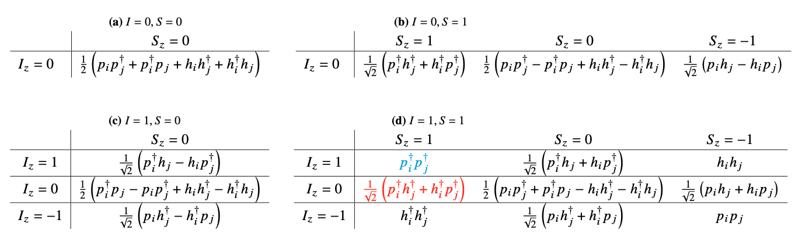
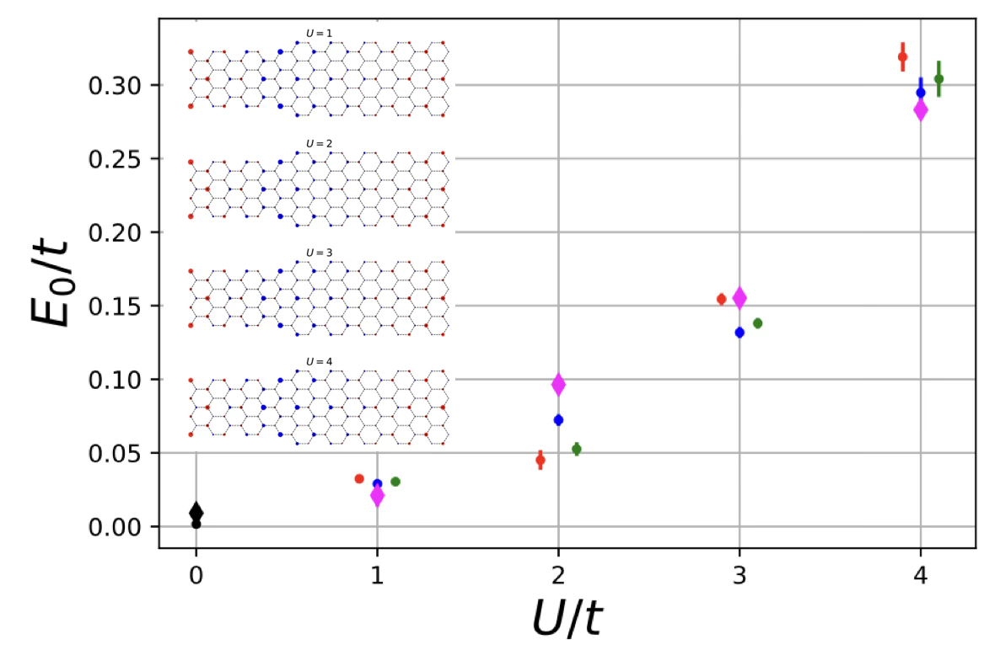
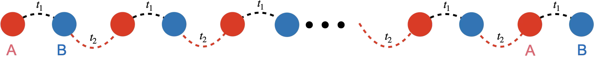
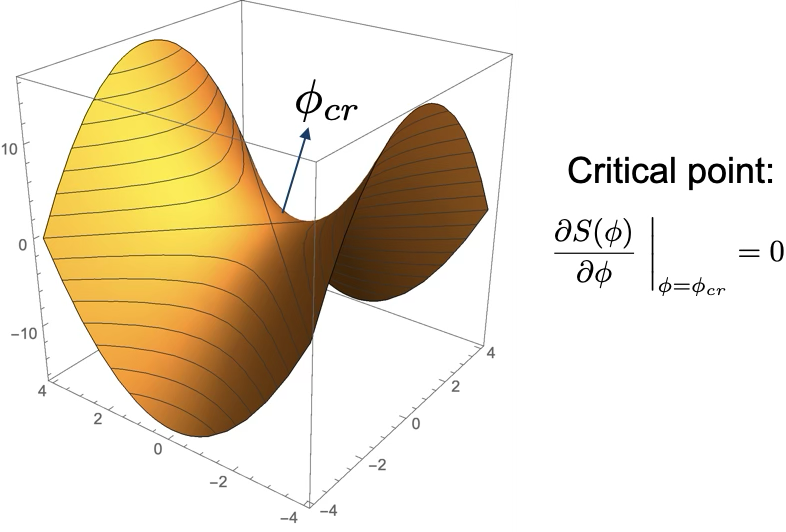
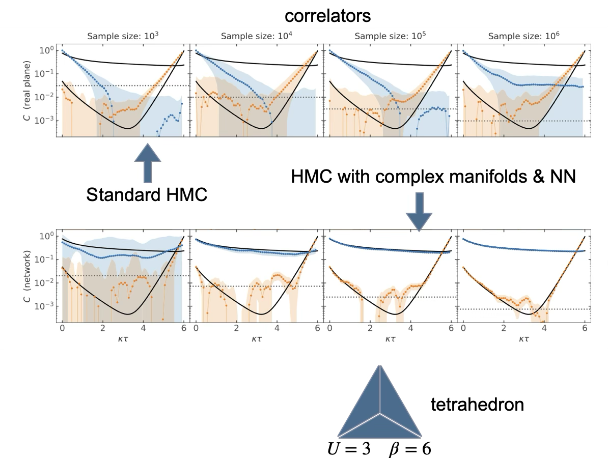
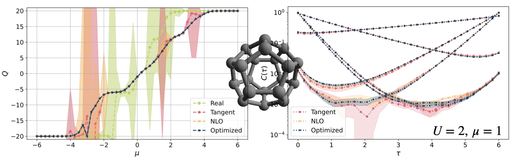

Life in low-D
Who is this guy?
- Originally a nuclear many-body theorist
- University of Washington (Seattle)
- Staff member at Lawrence Livermore National Lab (California) 2005-2013
- Access to big computers
- Performed quantum monte carlo (QMC) simulations of Quantum Chromodynamics (QCD)
- quarks and gluons and discretized space-time lattices
- University of Bonn/Forschungszentrum Jülich (2013-present)
- Applied QMC methods to low-dimensional strongly correlated electronic systems
- electrons on physical crystal lattices
- Applied QMC methods to low-dimensional strongly correlated electronic systems

Techniques adapted from lattice QCD
Markov Chain Monte Carlo (MCMC) w/ Hybrid (Hamiltonian) MC (Duane et al. Phys.Lett. B195 (1987) 216-222)

- Other “borrowed” ideas
- pseudo-fermions, J. Ostmeyer, S.Krieg, T.Lähde,T.L., et al., Phys.Rev.B 102 (2020) 245105
- Hasenbusch preconditioning, J. Ostmeyer, S.Krieg, T.L. et al. Comput.Phys.Commun. 236 (2019) 15-25
Anatomy of a correlator
Single-body correlation functions \(\langle p_x^{}(\tau)p_y^\dagger(0)\rangle = \langle M_{xy;\tau}^{-1}\rangle\equiv C(\tau)\)

Spectral Decomposition Theorem
\[\begin{align} C(\tau)&=A_p e^{-(E_p-E_\Omega)\tau}+A_{ex} e^{-(E_{ex}-E_\Omega)\tau}+\ldots+A_he^{(E_h-E_\Omega)(\tau-\beta)}\\ &\to A_pe^{-(E_p-E_\Omega)\tau}\quad\quad(0\ll\tau\ll\beta) \end{align}\]
We can now extract excitation energies


- First QMC simulation of nanotube
- T.L. & T. Lähde Phys.Rev. B93 (2016) 155106
Determined quantum phase transition in 2D Hubbard (honeycomb)

- Finite size scaling analysis
- tune \(U_c\), \(\beta\) and \(\nu\) to obtain data collapse (universal line)
- most precise value of critical coupling to date : \(U_c=3.835(14)\)
- J. Ostmeyer, S. Krieg, T. Lähde, T.L., et al., Phys.Rev.B 104 (2021) 155142
Two-body excitations
- Can assign spin/isospin quantum numbers to the holes and particles
| \(S_z=1/2\) | \(S_z=-1/2\) | |
|---|---|---|
| \(I_z=1/2\) | \(p^\dagger\) | \(h^{}\) |
| \(I_z=-1/2\) | \(h^\dagger\) | \(p^{}\) |

- Two-body interpolating operators

QMC Simulations
Localizations persist with strong interactions

- T.L., U.-G. Meißner, L. Razmadze Phys.Rev.B 106 (2022) 195422
An effective theory for 1-D spin chain

\[ H_{1D}= -\sum_ka^\dagger_k \begin{pmatrix} m_s & t_Ae^{ik}+t_Be^{-ik}\\ t_A e^{-ik}+t_Be^{ik} & -m_s \end{pmatrix} a^{}_k \]
A novel form of localization

- J. Ostmeyer, T.L., et al. Phys.Rev.B 109 (2024) 195135
The interacting SSH model

- Topological \(t_1<t_2\), \(t_1=v,\ t_2=w\)


- Experimentally realizable
- Silicon quantum dots Kiczynski et al., Nature 606 (2022) 694
- Artificial lattices Meier et al., Nature Commun. 7 (2016) 13986
Localized spin centers w/ defects and interactions


Alleviating the Sign Problem w/ Contour deformations
Push domain of \(\phi\in\mathbb{R}^N\to\mathbb{C}^N\)
- \(\exists\) certain manifolds \(\mathcal{T}\subset\mathbb{C}^N\) where \(S_{\mathcal{I}}[\phi\in\mathcal{T}]={\rm constant}\)
\[\begin{align} \int_{\phi\in\mathbb{R}^N}&\mathcal{D}[\phi]e^{-S[\phi]}\\ \to& \sum_{\mathcal{T}}e^{-iS_{\mathcal{I}}^{\mathcal{T}}}\int_{\varphi\in\mathcal{T}\subset\mathbb{C}^N}\mathcal{D}[\varphi]e^{-S_{\mathcal{R}}[\varphi]} \end{align}\]

- M. Cristoforetti et al., Phys.Rev. D88 (2013) 051501
- Kanazawa & Tanizaki JHEP 1503 (2015) 044
- Location of thimbles not know a priori
- Can approach thimbles via holomorphic flow
- However, determining exact locations of all relevant thimbles just as hard as original sign problem
- Numerically intensive
- Train a NN to “learn” location of Lefschetz thimbles

- J.-L. Wynen, T.L., et al., Phys.Rev.B 103 (2021) 125153
- M. Rodekamp, T.L., et al., Phys.Rev.B 106 (2022) 125139

\[\phi_{x,t}\to\phi_{x,t}+i\phi_c\quad\forall\ x,t\]

- M. Rodekamp, T.L., et al.,Eur.Phys.J.B 98 (2025) 36
- C. Gäntgen, T.L., et al., Phys.Rev.B 109 (2024) 195158